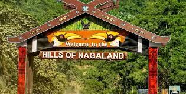

NAGALAND ITERINARY
Last winter i went to the Northeastern part of India which is also called Seven Sisters and today i will tell you about my journey that will help you to travel there.
Please select the city:
Kohima

Mon
Nagaland was awsome and the food was really really good and obviously healthy here are some popular and tasty food from Nagaland